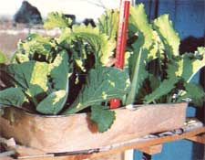
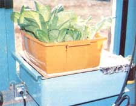
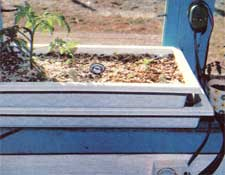
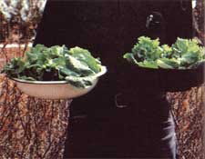
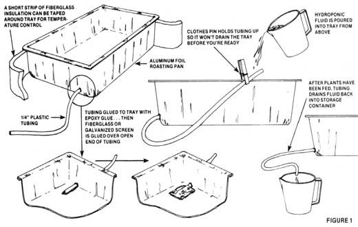
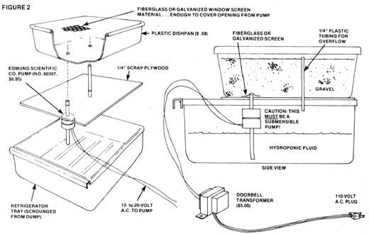

James B. DeKorne-who lives with his family on a small homestead near El Rito, New Mexico-has had several articles published in MOTHER, including: "Hydroponic Greenhouse Gardening" (MOTHER NO. 29, pages 68-71), "Yes, Virginia, There Is a Free Lunch ... It's Called the Solar Greenhouse" (MOTHER NO. 36, pages 101-104), "Organic Hydroponics" (MOTHER NO. 39, pages 32-35), and "Feedback on Organic Hydroponics" (MOTHER NO. 40, page 30). -The Editors.
Longtime MOTHER readers may remember my articles on greenhouses and hydroponic gardening that have appeared in past issues of this magazine. They may also recall that my original interest in those subjects was whetted because I live in the northwest corner of New Mexico... where growing seasons are short and rainfall is scant.
A few years ago, I slowly became fascinated by the idea of using one or more hydroponic greenhouses to beat these gardening limitations. And then, before I knew what was happening, I found my fascination turning almost into an obsession. Darn it! I really began to relish the challenge of growing an absolute maximum amount of fresh, tasty food in the smallest practical space over the longest possible period of time. Result: My family's experiments with hydroponic window boxes last winter convinced me that almost anyone should be able to produce an amazing amount of green and leafy salad fare in just an average-sized window.
On December 18, 1976, we planted three 11 X 19-inch hydroponic gardens with lettuce and Chinese cabbage seeds and placed them in our bedroom window. We added a fourth tray to the first three on January 21, 1977.
These four mini-gardens have a combined surface area of 5.1 square feet ... which is roughly four square feet smaller than the top of an average-sized card table. And the window we placed them in faces a full seventy-five degrees east of due south . . . which is certainly not the best orientation for growing anything, but was the only orientation we had to work with so we used it.
Despite the small size of our four-sectioned salad plot and despite their less-than-ideal exposure to the sun, however, we began harvesting lettuce and cabbage leaves on February 19. And we continued that harvest on a daily basis from all four trays for a full month ... and, believe it or not, as this issue went to press we were still picking leaves from two of them. (We needed two of the containers for some different gardening experiments on March 19 ... so we pulled all of the lettuce and cabbage plants from them on that day, leaving only the other two trays for the continuation of our window box experiment.)
During the one-month period between February 19 and March 19, we picked a total of 6.15 pounds of greens from our 5.1-square-foot hydroponic garden. That's almost 1.2 pounds of edible tissue per square foot of growing space. Or, to put it another way, Elizabeth (my wife) and I were both able to eat a fresh green salad almost every night for a month in late winter (when such fresh green edibles are most appreciated) ... and all those salads were picked from a space only slightly larger than half the top of a card table.
That's not bad. In fact, it's pretty darned good. If you were to maintain this level of production for a full year, you'd find yourself raising over 14 pounds of food on every square foot of one of these hydroponic gardens. Which figures out to an annual harvest of more than 70 pounds of leafy green vegetables from our 5.1-square-foot window box test plot. Which, in turn, means that if we were to grow only lettuce (which sells in nearby supermarkets for 570 a pound) year round in our "full sized" setup, we'd be shaving forty dollars a year off the family food bill ... and eating far-fresher-than-supermarket lettuce in the bargain!
Best of all, I believe that it's even possible to improve on these figures. Currently, for example, we're experimenting with a rather unusual growing technique that should further increase a hydroponic garden's production ... but more about that in another article. For now, it's enough to know that we've already impressed ourselves by raising a rather incredible amount of fresh, tasty salad greens in a very small space and for very little money.
Our first three window box hydroponic tanks were nothing but aluminum foil roasting pans purchased at a discount store. Each has (we're still using them) an inside dimension of approximately 11" X 19", or a surface area of roughly 1.45 square feet.
We turned these trays into hydroponic gardens (Fig. 1) by first punching a small hole in one corner of each container, and then inserting the end of a 2-1/2-foot length of 1/4-inch plastic tubing. About two inches of this tubing was epoxied to the bottom of the tray, and the rest was allowed to protrude outside. It's important, by the way, to have a small piece of fiberglass or galvanized window screen glued over the two-inch-long end of the tube inside the gardening box (to keep the drainage hose from becoming clogged during use).
Once the hose was attached to the foil roasting pan and the inlet end of the drainage tube was protected with a piece of screen, the tray was filled to within a half inch of its rim with sand, crushed gravel, or perlite (only inert growing mediums, as you know, are used in a hydroponic growing system).
Although seeds may be sown directly into any of these growing mediums, we've found that when they are they often get washed around by the hydroponic solution and then sprout in unexpected places. Experience has shown us that it's far better to start seedlings in small paper cups of vermiculite, and then transplant the tiny plants to the gardening trays.
A short piece of fiberglass insulation can be taped around the outside of each tray, if you like, to help stabilize the temperature of the minigardens. And you'll find that a spring-type clothespin is all you need to hold the drainage tube to the container's lip during each flooding cycle so that the hydroponic fluid can't run out of the bed until you're ready for it to.
(There is another type of hydroponic gardening, in which a plant's roots are kept constantly immersed in solution. In my opinion, however, the technique described here is far superior and a lot less trouble. Just remember that the object of this method of culture is the complete flooding-and then the complete draining-of the growing medium. In this way, the roots of your plants are always kept moist ... but are never actually immersed in solution for more than a few minutes each day.)
The total cost of one of these mini-gardens is only about one dollar ... and, for the money, the little growing units perform like champs. Whenever you want to flood the inert medium surrounding your seedlings or maturing plants with hydro. ponic fluid (at least once a day during the winter and three times a day during the longer days of late spring, summer, and early fall), you just hitch up the free end of the drainage tube with its clothespin and "start pourin' ". Stop when you see the fluid rising up through the growing medium, remove the pin, and then let the fertilizing liquid drain out through the plastic tubing into a bucket or storage container.
The hydroponic solution, of course, may be used again and again for at least a week ... although you will have to add some water occasionally to replace what evaporates and is used by the plants. The basic solution itself-at least according to the directions which come with most hydroponic chemicals-should be changed once every week or so, but we've used the same batch for as long as a month with no apparent ill effects.
In short, then, the very simple and inexpensive hydroponic trays that I've just described may only work manually ... but they do work quite well and I recommend them. The only prob lem we've ever encountered with ours was when the epoxy glu fractured on one of the mini-tanks and allowed hydroponic fluid to seep out around its drainage tube. But that was no bi deal, it was easily repaired, and it probably wouldn't have happened anyway if we'd taken a little more care when sealin the joint in the first place.
As well as our original hydroponic trays worked right from the beginning, we soon found ourselves thinking about an ''in proved" minigarden: one with a built-in overflow tube so that we could never flush our plants with too much water ... an maybe, its own fertilizing solution reservoir which, once an for all, would put an end to the need for pinning and unpinning a drainage tube, messing around with a storage container, etc.
And that's just what we built in January ... from an ordinary 59c plastic dishpan, the vegetable tray from a junked refrigerator, a piece of scrap plywood, a $6.95 pump, a $5.00 transformer, a few inches of plastic tubing, and a small square of screening (see Fig. 2).
As the drawing shows, the new unit was constructed by drilling matched holes through the bottom of the dishpan and the piece of quarter-inch plywood. (These holes were just large enough for quarter-inch plastic tubing to fit through . . . snugly.) The plywood itself, of course, must be large enough to overlap the edges of the refrigerator tray so that it will provide a sturdy and reliable platform for the dishpan to rest upon.
We bought our miniature submersible pump (remember, an "ordinary" pump can electrocute you when immersed in water or other fluids ... and you must use a submersible pump if you construct one of these automatic hydroponic gardens) from The Edmund Scientific Company, Edscorp, Building, Barrington, N.J. 08007. It's Item No. 60,307, currently sells for $6.95 postpaid, and we run ours off the kind of doorbell transformer that most any hardware store sells for five dollars or less.
The amount of electricity consumed by this tiny pump (which is used only intermittently and for very short periods of time) is insignificant and I doubt that the miniature rig makes any difference at all in our monthly utility bill. We just plug the unit in and let it run until we see hydroponic fluid beginning to rise in the growing medium. Then we unplug the pump. If for any reason we forget the second part (unplugging), the overflow tube built into the gardening tray keeps the solution from overfilling the container and spilling onto the floor.
If you can't-or don't want to-construct your own hydroponic window box, a very nice unit may be purchased "ready made" for about $30 from either Miracle Gardens, Inc., 47 Hall St., Brooklyn, N.Y. 11205 or from the current Sears Farm and Ranch catalog. The system is completely automated ... right down to an electric timer that floods the growing medium at pre-selected intervals. We've programmed ours to feed its plants at 6: 00 a. m., noon, and 5: 00 p. m., the timer uses no more electricity than an electric clock, and the whole setup is especially convenient for busy people who can't always be home at a regular time to flood a hydroponic garden.
I've even toyed with the idea of using the single timer on our one "store bought" mini-garden to feed all our trays of plants at once (automatically, of course) ... and I can envision a busy apartment dweller doing little more with his or her hy droponic window boxes than adding solution once a week and harvesting a fresh salad every night.
Always bear in mind that there's nothing sacrosanct about any of the hydroponic tanks or trays I've just described. A perfectly adequate minigarden can be grown in a coffee can that has had a few holes punched in its bottom before the container was filled with pea gravel. Almost any inert medium you can think of that is flushed with either a chemical or organic hydroponic solution once, twice, or three times a day and protected from wild temperature extremes will produce bumper crops of a wide variety of edible plants ... no matter how bare-bones simple or unnecessarily complex a container it's put in. As long as that container will hold water. I once tried to grow a hydroponic garden in a wooden box which I thought was well caulked. Try as I might, however (and I tried everything short of lining that box with fiberglassed resin, which I didn't have access to at the time), I could never get the bed to stop leaking and I eventually had to give up on it.
If the hydroponic experiments we've conducted over the past few years are any indication, there's also nothing sacrosanct about the solutions used in this type of gardening. We've tried three different brands of commercial chemicals and had excellent results with all of them. Our research into organic solutions and the trials we've conducted with them have proven satisfactory too, and have been described in this magazine (MOTHER NO. 39, pages 32-35) and discussed in detail in our book, The Survival Greenhouse.
Our experiments with a number of hydroponic systems and techniques goes on ... mainly because we're having so much fun with them. However, if you'd like, you can forget all about the fun part of this kind of gardening (or else just chalk it up as an added benefit which costs you nothing).
Which is to say that if [1] you're only interested in a daily, weekly, monthly, and yearly dollars-and- cents saving on your family's food bills while [2] you eat fresher, greener, and more nutritious salad fare than you'll ever buy in a supermarket all [31 grown right on your house or apartment's windowsills for [41 a total equipment investment as low as one skinny dollar ... well, there's no need for you to worry yourself about our "fun" experiments at all.
Just plant one of the "windowsill, hydroponic, inflationbuster gardens" described above ... flood it regularly with any of the nourishing solutions mentioned here ... and stand back! We've already proven that such a mini-vegetable patch can do the job.
I often find myself defending the hydroponic method of gardening from the criticism of misinformed people who state that since it isn't "organic" (it can be, but usually isn't), hydroponics is therefore "bad" and sleeps in the same bed with chemical-based "agribiz" types of farming. I don't believe that's true, for these reasons:
[1] 1, too, agree that the agribusiness chemical fertilization of farmland is bad agriculture. And I believe it's bad because, eventually, it seems to starve out the natural bacteria in the soil which break organic material down into the chemical elements required by plant life. And once these bacteria have been killed, nothing seems able to grow very well on that soil unless it is fertilized with larger and larger doses of chemicals. In effect, then, the chemical fertilization of farmland sooner or later seems to turn that land into a junkie.
The chemicals used in hydroponic gardening, on the other hand, are not put on the soil ... they are only used to irrigate gravel or some other inert growing medium. And when those solutions are finally discarded, they're too depleted to do any damage to the earth (I dump our old hydroponic solutions at the foot of a small elm tree in our yard).
[2] An atom of nitrogen is an atom of nitrogen, no matter whether it came from a pile of compost or a sack of chemical fertilizer. Plants require sixteen chemical elements for proper growth and nutrition, and all of these chemicals are utilized by a plant in their "inorganic" or atomic form.
This is a basic fact of botany and, therefore, there is no nutritional difference between a plant raised "organically" and a plant that is grown "chemically". This assumes, of course, that both plants have an adequate diet available to them since, obviously, any plant-organic or otherwise-can be nutritionally deficient if it doesn't receive a nutritional diet to begin with.
[3] Some of the chemicals in commercial hydroponic fertilizers are derived from petroleum ... and this is the only criticism of hydroponics that I will accept as legitimate.
However. I purchased 50 pounds of Hyponex in 1973 for about $30 ... and here it is, 1977 ... and I've used up less than half of that 50 pounds. My hydroponic greenhouse (greenhouse, not window box) is fairly large, yet the amount of Hyponex used (one teaspoon per gallon of water) is so small that a little goes a long, long way. Or, to put it another way: How many dollars have you spent on gasoline for your car since 1973? I'll bet it doesn't get the mileage from its gas tank that my garden gets from my hydroponic tanks!
And that's the gist of why I (a guy very deeply involved in self-sufficient living, alternative energy systems, minimum impact on the planet. and other related subjects) find nothing "unnatural" or "wrong" about hydroponics. I'm right there with you "organic" gardeners when it comes to farming in soil ... but hydroponics is a different breed of cat entirely. And, as far as I've been able to learn, there is absolutely no scientific evidence of any kind that proves "organic" vegetables are nutritionally different from their "inorganic" brothers.
So ... please don't criticize hydroponics on strictly emotional grounds. At least give the idea a try before you attack it. And I'm betting that if you do try hydroponic gardening ... you're going to become as enthusiastic about it as I am.-J.D.
Hyponex: Available from most nurseries and garden supply stores. Manufactured by The Hydroponic Chemical Company, Dept. TMEN, Copley, Ohio 44321.
Dr. Chatelier's Plant Food: Check your local nursery or write directly to the company at P.O. Box 20375, Dept. TMEN, St. Petersburg, Fla. 33742. These folks are nice people to do business with and they make a fine plant food.
Miracle Gardens, Inc.: This is the same company that makes the automated hydroponic garden mentioned in the article. It also sells a liquid plant food (other brands come in granular form, which must be dissolved in water). Miracle Gardens. Inc., 47 Hall St., Dept TMEN, Brooklyn, N.Y. 11205.
There are so many titles out now on hydroponics that I'm ashamed to admit that I haven't been able to keep up with all of them. One of the classics in the field, though, is Beginner's Guide to Hydroponics, by James S. Douglas, Drake Publishers, Inc., New York, 1973, $3.95 ... available from Mother's Bookshelf.
My own book, The Survival Greenhouse, discusses the subject, covers many of our other experiments with greenhouse vegetable gardening, and is one of the very few sources of information on "organic" hydroponic gardening. It's available for $7.50, plus 75 cents postage and handling from Walden Foundation, P.O. Box 5, El Rito, N.M. 87530 or from Mother's Bookshelf.-J.D.
|
 PHOTOS BY THE AUTHOR This is the basic $1.00 hydroponic tray made from an alum foil roasting pan that is described in the accompanying article. Please note the fiberglass insulation wrapped around the tray to protect its contents from sudden temperature changes. |
 The ""new, improved"" hydroponic tank designed and built from odds and ends and a few purchased items by Jim DeKorne in January. The author states that this?byfar?has been the most successful of his homebuilt windowsill hydroponic systems. |
 Here's the $30, fully automatic hydroponic growing unit manufactured by Miracle Gardens, Inc. An electric preset (by you) timer automatically floods the plants in the tray with fertilizing solution any time during the day or night that you desire. |
|
 Fourteen and a half ounces of trimmings taken from just two of the DeKornes' windowsill hydroponic tanks on March 9, 1977. Jim DeKorne, author of this article, states that the growth in the containers was so thick that it had to be trimmed! |
 ILLUSTRATIONS BASED ON DRAWINGS BY THE AUTHOR |
 ILLUSTRATIONS BASED ON DRAWINGS BY THE AUTHOR |